If you can imagine it, you can program it. That phrase changed my life. I'm web full stack developer, who studied computing engineering. Love building products, passionate about challenges, interested in growth. We have the responsability to build the future with our code.
Education
Computing Engineering
Holguin University, Cuba (2021- 2024)
Autodidact
Most of my programming skills I have learned by my own.
Platzi
I constantly take some courses on Platzi to increase my skills. Here some Certificates that I've obtained.
Skills
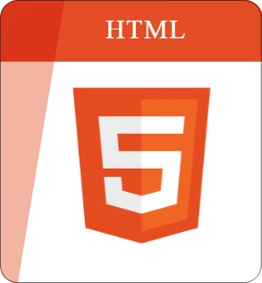
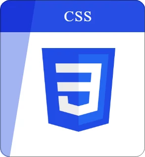
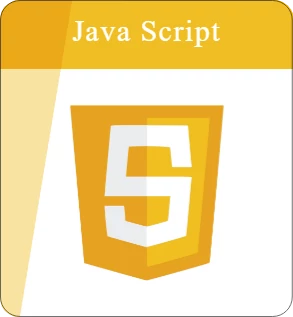
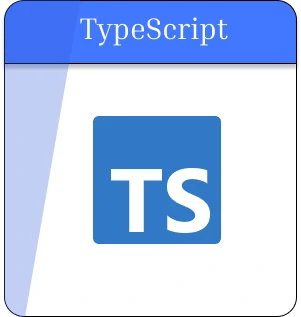
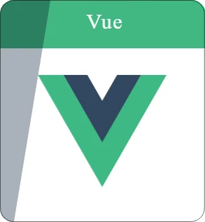
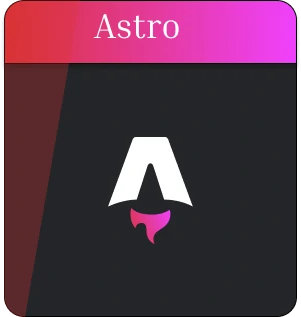
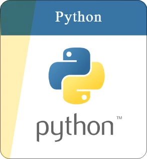
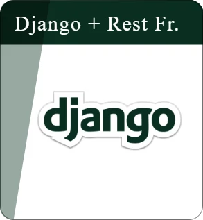
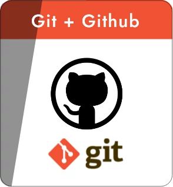
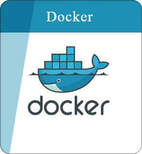
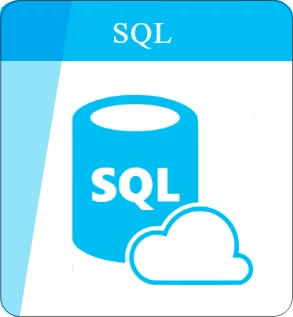
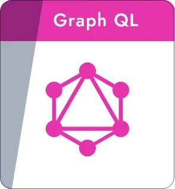
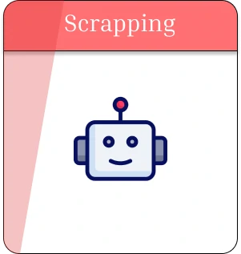
Projects
Rred DuctFreelance project for a company that sells rubber and metal products. A catalog to display different pieces that the company manufactures, contact info and more. It was a challenge since the client was Turkish and his English was not very well.
English Vocabulary ManagerI build this app to facilitate the managment of english vocabulary. It has a section to manage the vocabulary and other to practice it. It was my first experience on mobile development.
Green NotesGreen Notes was the final work of web programming in my second year of Computer Engineering. I worked as a full stack and team lead. It was my first time working in a team, so I learned how to collaborate to build a product.
Observatorio Central de Cirugía Neonatal (OCCN)System to manage all newborns information for the Pediatric Hospital of Holguin, Cuba. This project was carried on by GPDB, an investigation group of the university that I studied, that collaborate with hospitals to build products related with medicine, and I participated as a full stack developer. Was a great experience to see how software can impact in the life of so many people.
Bio DigestionSystem for the managment of the biogas production process from mixture vinaza-cachaza. I participated as a full stack developer. It was an enriching experience due to I learned a lot about how the production of biogas works.
BeStoreBrave decision of making an E-Commerce by my own. I learned a lot about how important is testing, good arquitecture, good practices and organization to mantain big products of softwares.
B&M Company ShopI used all the experienced that I acquired building Bestore, working as full stack, developing an E-commerce for the company B&M. It was my first experience working on a professional team and I learned a lot.
Krol NailsFreelance project for a beauty salon. A catalog to show works, offers, contact and more. It was my first freelance project, so I learned how to negotiate with clients and give value to them.